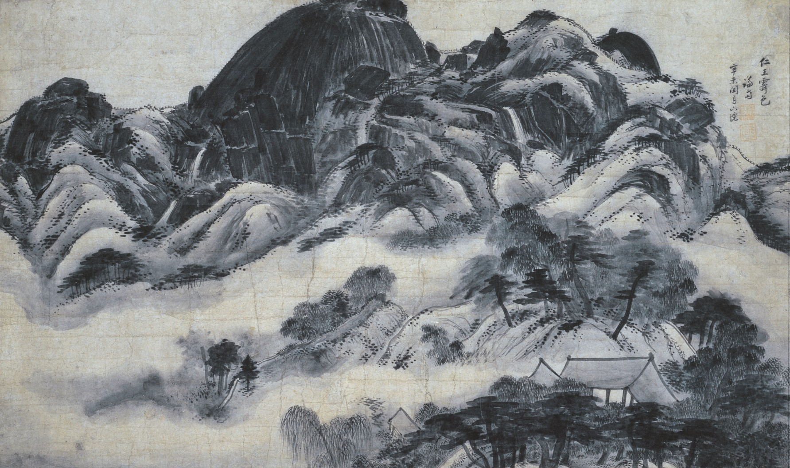

About South Korea Traditional and Paintings
Paintings:

Korean painting: (Korean: 한국화) includes paintings made in Korea or by overseas Koreans on all surfaces. The earliest surviving Korean paintings are murals in the Goguryeo tombs, of which considerable numbers survive, the oldest from some 2,000 years ago (mostly now in North Korea), with varied scenes including dancers, hunting and spirits. It has been hypothesized the Takamatsuzuka Tomb in Japan, from the 7th-century end of the Goguryeo period, has paintings with Goguryeo influence, either done by Goguryeo artists, or Japanese one trained by Goguryeo people.
Since a lot of influences came into the Korean peninsula from China during the Three Kingdoms period. Until the Joseon dynasty the primary influences came from Chinese painting though done with Korean landscapes, facial features, Buddhist topics, and an emphasis on celestial observation in keeping with the rapid development of Korean astronomy. Painting in the Goryeo period (918-1392) was dominated by Buddhist scroll paintings, adapting Chinese styles; about 160 survive from the period.
In this period the royal artist's school or academy, the Dohwaseo was established, with examinations for artists and run by bureaucrats of the court. Around the start of the Joseon period (1392-1897), the largely monochrome ink-wash painting tradition already long-established in China was introduced, and has remained an important strand in Korean and Japanese painting, with the local version of the shan shui style of mountain landscape painting as important as in China.

Minhwa folk
Minhwa refers to Korean folk art produced mostly by itinerant or unknown artists without formal training, emulating contemporary trends in fine art for the purpose of everyday use or decoration. The term "minhwa" was coined by Yanagi Sōetsu. Minhwa literally means "painting of the people" or "popular painting". This type of painting was often the work of anonymous craftsmen who faithfully adhered to the styles, canons and genres inherited from the past. Minhwa also involved a magical dimension. They were believed to possess beneficial virtues and to protect the owner and his family from evil forces. They feature popular themes such as cranes, rocks, water, clouds, the sun, moon, pine-trees, tortoises, insects and flowers. Minhwa means popular painting or peoples art and is traditional Korean folk art from the Chosun era (1392-1910) painted onto paper or on canvas.
Yoon (2020) mentions that “Minhwa is a traditional art form that was intimately connected to the lives of the Korean people, so it best embodies the Korean sentiment” (p. 14). Minhwa began being used in palaces by royal court painters before anonymous artists adopted and dispersed their art to the populace to convey messages, ward away evil spirits, and wish for good things to happen. Minhwa art developed into its present form in the seventeenth century. The artists were common people who went from place to place, often following festivals, where they would paint for the locals, fulfilling their commissions on the spot. The artists are mostly unknown commoners of the low and middle class, some were traveling visitors usually attending festivals, who followed trends in fine art to develop the crude minhwa style artwork that expressed its emotions. While using symbolism, optimism, humor, and satire.
Important stages in life were also marked by the painting of a minhwa picture. Both common people and nobles would commission these artists. The paintings worked on a number of levels. They show figures from folk mythology and legends, symbols of happiness, wealth and health, and scenes of everyday life. The most common figures were animals that represented power, such as the tiger, or providential circumstances, such as carp, which represent success. Kkachi horangi (까치호랑이) is a prominent genre of minhwa that depicts magpies and tigers. In kkachi horangi paintings, the tiger, which is intentionally given a ridiculous and stupid appearance (hence its nickname "Idiot tiger" 바보호랑이), represents authority and the aristocratic yangban, while the dignified magpie represents the common man. Hence, kkachi horangi paintings of magpies and tigers were a satire of the hierarchical structure of Joseon's feudal society.
Goryeo Buddhist
Goryeo Buddhist paintings and architecture are prominent Korean art forms that are said to have originated in the 13 and 14th centuries. Known for their intricate depiction of Buddhist icons typically in the form of large hanging scrolls, artists made use of vibrant colors and adorned the patterns with gold. As Buddhism flourished as the official religion of the Goryeo Dynasty, various Buddhist artworks were produced under royal patronage and utilized for the purposes of state-sponsored ceremonies and funerary rituals. These paintings reflect not only the beliefs, but the taste and refine of the Goryeo royalty and nobility. Illustrations and decorative architectural styles often reflected the messages of Pure Land Buddhism or Amidism featuring Buddhas and Bodhisattvas; for instance, Avalokiteśvara, amongst others, were worshipped by their devotees to achieve the goal of rebirth in the Pure Land or paradise.
As one of the consequences of years of war, the majority of the paintings are no longer found in Korea. The tradition of Goryeo paintings, was forgotten for a very long time. Regained significance in the recent decades when scholars started studying the techniques and attributes that are commonly seen in these artworks. Currently, numerous of these paintings are preserved by Japanese collectors, who attained them either through trade or as a result of the Japanese colonial period from 1910-1945. To this day, scholars have been successful in identifying only less than 160 paintings throughout the world. At present, 133 Goryeo paintings have been found and preserved worldwide and a large percentage, 110 paintings to be specific, have illustrations of the Sukhāvatī (서방극락정토; Seobang Geungnak Jeongto) which roughly translates to the Western Heaven.
Pure Land Buddhism is a branch of Mahayana Buddhism enjoys immense popularity in East Asian Countries as the most followed tradition. Some of the most renowned painting depicts Amitābha (아미타불; Amitabul) who is believed to be the “Lord of the Western Paradise” either in alone or often accompanied by Bodhisattva Avalokiteśvara and Mahasthamaprapta which are Sanskrit names of Gwanseuum Bosal (관세음보살) and Daeseji Bosal (대세지 보살) respectively. Amitabul was also featured as surrounded by the Eight Great Bodhisattvas. Bodhisattva Ksitigarbha (지장보살; Jijang Bosal) was also worshiped and portrayed in several scroll paintings. These paintings also communicated how one can join them in paradise.
True-View Landscapes - Late Joseon Period
A genre of Korean landscape painting termed “true-view” landscape painting refers to paintings of scenery that truly existed in Korea, and that flowered during the seventeenth century through the beginning of the nineteenth century. After the fall of Ming (1644), Koreans became increasingly conscious about their own cultural identity, and came to investigate not only their own historical and cultural heritage, but also their own land of exceptional beauty. This coincided with the beginning of the development of the School of Practical Learning in Qing China, which Korean scholars avidly absorbed and assimilated into their own cultural environment. It is in this multi-layered cultural and intellectual background that the "true-view" landscape painting evolved. It is now acclaimed to be the best group of Joseon dynasty paintings that expresses the uniquely Korean inspiration, creative energy, and the ethos of Korean people.

Hwajohwa
Hwajohwa (화조화) is a Korean painting genre focusing on depictions of flowers and birds. It's a popular style within Korean traditional painting, particularly during the Joseon Dynasty, and is often seen as a way to express a cheerful and warm-hearted spirit. Hwajodo (화조도), a related term, often refers to paintings of this subject, especially those found in folk art, or minhwa. Hwajohwa paintings typically feature a variety of flowers and birds, sometimes including other animals like deer, rabbits, or butterflies. This genre was popular both in the royal court and among the general public, particularly as decorative art. Hwajohwa can have symbolic meanings. For example, mandarin ducks often represent marital fidelity, and hawks can symbolize military prowess. Hwajohwa can be found in various styles, from detailed and realistic to more stylized and folk-art inspired. The genre flourished during the Joseon Dynasty, with different periods emphasizing different aspects, like the use of monochrome ink painting during the Middle Joseon period. While Hwajohwa is uniquely Korean, the subject of bird and flower painting is also found in Chinese and Japanese art, each with their own interpretations and styles.
Munbangdo
Munbangdo, also known as chaekgeori or chaekkado, is a South Korean still-life painting genre that emerged in the 18th century and continued to be popular into the mid-20th century. These paintings typically feature books and other objects associated with a scholar's study, such as inkstones, ceramics, and incense burners. They reflect a trend in late Joseon Korea of collecting and displaying items, and often incorporate auspicious motifs symbolizing good fortune. Munbangdo paintings center around objects found in a scholar's study, with books being the most prominent. Other common items include inkstones, ceramics, bronzeware, and various curiosities. Many objects in munbangdo paintings carry symbolic meanings.
For example, pomegranates represent fertility, peonies symbolize wealth and prosperity, and plum branches represent dignity and virtue. The paintings often include auspicious symbols like peaches for longevity, Buddha's hand citrus for the Buddha, and narcissus for immortals. Munbangdo paintings can be found as individual panels, folding screens, or even incorporated into larger decorative screens. The genre developed during a period of heightened interest in collecting and display, influenced by global trends in trade and new technologies.
Joseon Dynasty
During the Joseon Dynasty (1392-1910), several distinct painting genres flourished in Korea, with genre painting and still-life painting being particularly prominent. Genre painting, also known as "sokhwa" (worldly paintings), depicted scenes of daily life, while still-life paintings, like chaekgeori, focused on objects, often including books and scholarly items. Scenes of everyday life, capturing the activities and customs of commoners and the literati. Kim Hong-do (Danwon), Shin Yun-bok (Hyewon), and Kim Deuk-sin are renowned for their genre paintings. Vivid and realistic portrayals of daily life, often emphasizing human emotions and interactions.
"Wrestling" by Kim Hong-do, and the works of Shin Yun-bok depicting the lives of the upper class and romantic relationships. Arrangements of books, scholarly tools, and other objects associated with learning and the literati. Emphasis on the beauty and symbolism of objects, often incorporating decorative elements and auspicious symbolism. Flourished from the late 18th century to the early 20th century, reflecting the growing interest in books and scholarship. Paintings featuring bookshelves, inkstones, brushes, and other items associated with study and collecting. Developed into a major genre, with artists like An Gyeon and Jeong Seon (known for "True View" landscapes). A genre focused on expressing natural beauty, with styles ranging from detailed "chaemukpung" (color and ink) to simple "sumukpung" (ink wash).
Depicted individuals, often members of the royal family or influential figures. A type of still-life painting that emerged in late 18th-century Joseon, focusing on objects related to scholarly pursuits. The Joseon Dynasty saw a vibrant and diverse range of painting styles, with genre and still-life paintings offering valuable insights into the social, cultural, and intellectual life of the period.Ten Symbols of Longevity
The "Ten Symbols of Longevity" painting, known as shipjangsaengdo in Korean, is a traditional artwork depicting ten natural elements believed to symbolize eternal youth and long life. These symbols include the sun, clouds, mountains, water, pine trees, turtles, deer, cranes, peaches, and the herb of eternal youth. This art form was particularly popular during the Joseon dynasty in Korea. The ten symbols originated from Chinese Taoism but were adapted and developed as a distinct Korean art form, with Koreans selecting the ten specific symbols.
These paintings were often used in royal settings, placed behind the queen or crown prince during banquets and celebrations, signifying wishes for long and healthy lives for the royal family. They were also popular decorations on household items, reflecting the universal human desire for longevity and prosperity. Joseon dynasty rulers favored these paintings for various court events, including weddings and birthdays. The ten symbols are not only found in paintings but also in other art forms like ceramics, lacquerware, and even on the walls of ancient Goguryeo tombs.
Genre Painting
South Korean genre painting, known as pungsokhwa, depicts scenes from everyday life, particularly those of commoners during the Joseon Dynasty (1392-1910). These paintings are valued for their realistic portrayals of Joseon society and are considered a uniquely Korean art form. Pungsokhwa portrays ordinary people engaged in daily activities, work, leisure, and social interactions, rather than idealized or historical subjects. The paintings aim for accurate and candid representations of Joseon society, capturing the nuances of daily life, including clothing, customs, and social interactions. While earlier genre paintings often focused on the lives of the yangban (literati), 18th-century genre painting shifted to depict the lives of commoners.
Some artists, like Kim Hong-do and Shin Yun-bok, used genre painting not only as a form of artistic expression but also as a way to subtly comment on social issues and even critique the ruling class. While some artists focused on detailed, realistic depictions, others like Kim Hong-do incorporated humor and more dynamic compositions. One of the most celebrated genre painters, known for his realistic and often humorous depictions of daily life, including scenes of work, leisure, and social interactions. Known for his elegant and refined style, often depicting scenes of urban life, including courtesans and social gatherings. Genre painting reached its peak during the 18th century, with artists exploring new subjects and styles. The popularity of genre painting continued into the late Joseon period, with some artists catering to foreign travelers.
While Confucianism shaped many aspects of Joseon society, genre painting, particularly during the 18th century, reflected a shift in thought that embraced human nature and free will. Pungsokhwa provides valuable insights into the social, cultural, and even political landscape of the Joseon Dynasty. The focus on everyday life and the realistic depictions make genre painting a distinctive and highly valued part of Korean art history. Genre painting laid a foundation for later Korean artists and continues to inspire contemporary artists.
Traditions / Culture:
Traditions
The traditional dress known as hanbok (한복; 韓服; alternatively joseonot; 조선옷 in North Korea) has been worn since ancient times. The hanbok consists of a shirt (jeogori) and a skirt (chima). According to social status, Koreans used to dress differently, making clothing an important mark of social rank. Costumes were worn by the ruling class and the royal family. These upper classes also used jewelry to distance themselves from the ordinary people. A traditional item of jewellery for women was a pendant in the shape of certain elements[which?] of nature which was made of gemstones, to which a tassel of silk was connected. For thousands of years, Korean people nearly exclusively wore plain white and undecorated hanbok. Color and ornamentation was only worn if required for a uniform, to display social status, or during special occasions. This led to the development of the nickname "white-clothed people" to describe Koreans. This practice possibly began around the Three Kingdoms of Korea period and lasted until just after the Korean War, after which it ended due to poverty.
The basic everyday dress was shared by everyone, but distinctions were drawn in official and ceremonial clothes. During the winter people wore cotton-wadded dresses. Fur was also common. Hanbok are classified according to their purposes: everyday dress, ceremonial dress and special dress. Ceremonial dresses are worn on formal occasions, including a child's first birthday (doljanchi), a wedding or a funeral. [citation needed] Special dresses are made for purposes such as shamans, officials. Today the hanbok is still worn during formal occasions. The everyday use of the dress, however, has been lost. However, the elderly still dress in hanbok as well as active estates of the remnant of aristocratic families from the Joseon Dynasty, though this may be changing with something of a modern interest in the traditional dress among some of the young.
Traditionally, the hanbok was a wedding dress that dates back to the 14th century. It was a floor-length gown with an empire waist, fitted jacket, and sewn with vibrant or pastel colors. The use of the Hanbok in daily wear has dropped significantly over the last handful of decades. In recent years, with the rise of attention to K-Pop, (Korean Pop Music), interest in Korean culture has spiked to an all-time high. Many groups, such as BTS, BlackPink, KARD, and many more, have been praised for showing their culture and heritage by wearing Hanbok in music videos, award shows, and other public appearances.
Cultures
The contemporary culture of South Korea developed from the traditional culture of Korea which was prevalent in the early Korean nomadic tribes. By maintaining thousands of years of ancient Korean culture, with influence from ancient Chinese culture, South Korea split on its own path of cultural development away from North Korean culture since the division of Korea in 1945. The industrialization, urbanization and westernization of South Korea, especially Seoul, have brought many changes to the way Korean people live. Changing economics and lifestyles have led to urbanization—a concentration of population in major cities (and depopulation of the rural countryside), with multi-generational households separating into nuclear family living arrangements. Today, many cultural elements from South Korea, especially popular culture, have spread across the globe and have become some of the most prominent cultural forces in the world.
South Korean culture places a high value on respect, particularly for elders, and maintaining harmony in social interactions. Key aspects include bowing when greeting, using both hands when giving or receiving gifts or objects, and showing deference to those older. Table manners, such as waiting for the eldest to begin eating and avoiding blowing your nose at the table, are also important. Korean society is hierarchical, with significant emphasis on respecting those older. This includes waiting for them to speak first, offering assistance, and using honorifics. A bow is the traditional greeting, often accompanied by a handshake, particularly among men. Giving and receiving items, including business cards, should be done with both hands. Priority seats on public transport are reserved for the elderly, pregnant, or disabled. Shoes are typically removed when entering homes, temples, and sometimes traditional restaurants. The oldest person at the table is typically served first and is expected to take the first bite. Avoid touching food with your fingers as much as possible.
It is customary to pour drinks for others and avoid filling your own glass. Blowing your nose at the table is considered rude. Physical contact like hugging or back-slapping is generally reserved for close friends and family. Avoid writing someone's name in red ink, as it is associated with death. Koreans may ask personal questions as a way of showing interest and building rapport. Small gifts are often exchanged when visiting homes, and reciprocity is appreciated. PDA is generally frowned upon. Being on time is important, and it's considered polite to be punctual for meetings and appointments. Travellers from certain areas may need to submit health questionnaires or use the Q-Code system to declare their health status upon arrival. South Korea has strict laws regarding illegal drugs, with severe penalties for possession, use, or trafficking. Gambling is generally illegal, except for a few licensed casinos that are restricted to foreign visitors. It's a legal requirement to carry some form of identification, though it's rarely requested. South Korea has a 52-hour weekly work limit, although there is flexibility in daily hours as long as the weekly limit is not exceeded. Certain items like guns, narcotics, pornography, and counterfeit goods are prohibited from being imported into South Korea. By being aware of these rules and customs, visitors can have a more respectful and enjoyable experience in South Korea.